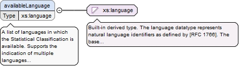
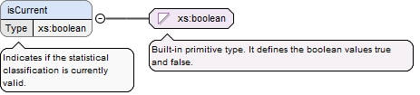
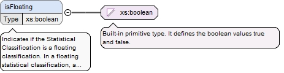

If value is False, the members are unique within the collection - if True, there may be duplicates. (Note that a mathematical “bag” permits duplicates and is unordered - a “set” does not have duplicates and may be ordered.)
Diagram
Type
xs:boolean
Properties
content
simple
minOccurs
1
maxOccurs
1
Source
<xs:element name="allowsDuplicates" type="xs:boolean" minOccurs="1" maxOccurs="1" xml:id="StatisticalClassification-allowsDuplicates"><xs:annotation><xs:documentation>If value is False, the members are unique within the collection - if True, there may be duplicates. (Note that a mathematical “bag” permits duplicates and is unordered - a “set” does not have duplicates and may be ordered.)</xs:documentation></xs:annotation></xs:element>
A list of languages in which the Statistical Classification is available. Supports the indication of multiple languages within a single property. Supports use of codes defined by the RFC 1766.
Diagram

Type
xs:language
Properties
content
simple
minOccurs
0
maxOccurs
unbounded
Source
<xs:element name="availableLanguage" type="xs:language" minOccurs="0" maxOccurs="unbounded" xml:id="StatisticalClassification-availableLanguage"><xs:annotation><xs:documentation>A list of languages in which the Statistical Classification is available. Supports the indication of multiple languages within a single property. Supports use of codes defined by the RFC 1766.</xs:documentation></xs:annotation></xs:element>
Bundles the information useful for a data catalog entry. Examples would be creator, contributor, title, copyright, embargo, and license informationA set of information useful for attribution, data discovery, and access.This is information that is tied to the identity of the object. If this information changes the version of the associated object changes.
<xs:element name="catalogDetails" type="CatalogDetailsXsdType" minOccurs="0" maxOccurs="1" xml:id="StatisticalClassification-catalogDetails"><xs:annotation><xs:documentation>Bundles the information useful for a data catalog entry. Examples would be creator, contributor, title, copyright, embargo, and license information A set of information useful for attribution, data discovery, and access. This is information that is tied to the identity of the object. If this information changes the version of the associated object changes.</xs:documentation></xs:annotation></xs:element>
Describes the relationship between the variant and its base Statistical Classification, including regroupings, aggregations added and extensions. (Source: GSIM StatisticalClassification/Changes from base Statistical Classification).
<xs:element name="changeFromBase" type="InternationalStringXsdType" minOccurs="0" maxOccurs="1" xml:id="StatisticalClassification-changeFromBase"><xs:annotation><xs:documentation>Describes the relationship between the variant and its base Statistical Classification, including regroupings, aggregations added and extensions. (Source: GSIM StatisticalClassification/Changes from base Statistical Classification).</xs:documentation></xs:annotation></xs:element>
<xs:element name="copyright" type="InternationalStringXsdType" minOccurs="0" maxOccurs="unbounded" xml:id="StatisticalClassification-copyright"><xs:annotation><xs:documentation>Copyright of the statistical classification.</xs:documentation></xs:annotation></xs:element>
A human-readable display label for the object. Supports the use of multiple languages. Repeat for labels with different content, for example, labels with differing length limitations.
<xs:element name="displayLabel" type="LabelForDisplayXsdType" minOccurs="0" maxOccurs="unbounded" xml:id="StatisticalClassification-displayLabel"><xs:annotation><xs:documentation>A human-readable display label for the object. Supports the use of multiple languages. Repeat for labels with different content, for example, labels with differing length limitations.</xs:documentation></xs:annotation></xs:element>
Indicates if the statistical classification is currently valid.
Diagram

Type
xs:boolean
Properties
content
simple
minOccurs
0
maxOccurs
1
Source
<xs:element name="isCurrent" type="xs:boolean" minOccurs="0" maxOccurs="1" xml:id="StatisticalClassification-isCurrent"><xs:annotation><xs:documentation>Indicates if the statistical classification is currently valid.</xs:documentation></xs:annotation></xs:element>
Indicates if the Statistical Classification is a floating classification. In a floating statistical classification, a validity period should be defined for all classification Items which will allow the display of the item structure and content at different points of time. (Source: GSIM StatisticalClassification/Floating).
Diagram

Type
xs:boolean
Properties
content
simple
minOccurs
0
maxOccurs
1
Source
<xs:element name="isFloating" type="xs:boolean" minOccurs="0" maxOccurs="1" xml:id="StatisticalClassification-isFloating"><xs:annotation><xs:documentation>Indicates if the Statistical Classification is a floating classification. In a floating statistical classification, a validity period should be defined for all classification Items which will allow the display of the item structure and content at different points of time. (Source: GSIM StatisticalClassification/Floating).</xs:documentation></xs:annotation></xs:element>
If the Statistical Classification is a variant, notes the specific purpose for which it was developed. (Source: GSIM StatisticalClassification/Purpose of variant).
<xs:element name="purposeOfVariant" type="InternationalStringXsdType" minOccurs="0" maxOccurs="1" xml:id="StatisticalClassification-purposeOfVariant"><xs:annotation><xs:documentation>If the Statistical Classification is a variant, notes the specific purpose for which it was developed. (Source: GSIM StatisticalClassification/Purpose of variant).</xs:documentation></xs:annotation></xs:element>
<xs:element name="rationale" type="InternationalStringXsdType" minOccurs="0" maxOccurs="1" xml:id="StatisticalClassification-rationale"><xs:annotation><xs:documentation>Explanation of the reason(s) some decision was made or some object exists.</xs:documentation></xs:annotation></xs:element>
<xs:element name="releaseDate" type="CombinedDateXsdType" minOccurs="0" maxOccurs="1" xml:id="StatisticalClassification-releaseDate"><xs:annotation><xs:documentation>Date when the current version of the Statistical Classification was released.</xs:documentation></xs:annotation></xs:element>
<xs:element name="updateChanges" type="InternationalStringXsdType" minOccurs="0" maxOccurs="unbounded" xml:id="StatisticalClassification-updateChanges"><xs:annotation><xs:documentation>Summary description of changes which have occurred since the most recent classification version or classification update came into force.</xs:documentation></xs:annotation></xs:element>
<xs:element name="usage" type="InternationalStringXsdType" minOccurs="0" maxOccurs="1" xml:id="StatisticalClassification-usage"><xs:annotation><xs:documentation>Explanation of the ways in which the object is employed.</xs:documentation></xs:annotation></xs:element>
The dates describing the validity period of the object. The date from which the object became valid must be defined if the map belongs to a "floating" construct. The date at which the object became invalid must be defined if the map belongs to a "floating" construct and is no longer valid. Per the Generic Statistical Information Model, Statistical Classification: "The date the statistical classification enters production use and the date on which the Statistical Classification was superseded by a successor version or otherwise ceased to be valid."
<xs:element name="validDates" type="DateRangeXsdType" minOccurs="0" maxOccurs="1" xml:id="StatisticalClassification-validDates"><xs:annotation><xs:documentation>The dates describing the validity period of the object. The date from which the object became valid must be defined if the map belongs to a "floating" construct. The date at which the object became invalid must be defined if the map belongs to a "floating" construct and is no longer valid. Per the Generic Statistical Information Model, Statistical Classification: "The date the statistical classification enters production use and the date on which the Statistical Classification was superseded by a successor version or otherwise ceased to be valid."</xs:documentation></xs:annotation></xs:element>
<xs:element name="StatisticalClassification_isMaintainedBy_Organization-Target" minOccurs="0" maxOccurs="unbounded" xml:id="StatisticalClassification_isMaintainedBy_Organization-Target"><xs:annotation><xs:documentation>Organization, agency, or group within an agency responsible for the maintenance and upkeep of the statistical classification.</xs:documentation></xs:annotation><xs:complexType><xs:complexContent><xs:extension base="ReferenceXsdType"><xs:sequence><xs:element name="typeOfClass" minOccurs="0" maxOccurs="unbounded" xml:id="StatisticalClassification_isMaintainedBy_Organization-Source"><xs:simpleType><xs:restriction base="xs:NMTOKEN"><xs:enumeration value="Organization"/></xs:restriction></xs:simpleType></xs:element></xs:sequence></xs:extension></xs:complexContent></xs:complexType></xs:element>
Statistical classification on which the current variant is based, and any subsequent versions of that statistical classification to which it is also applicable.
<xs:element name="StatisticalClassification_isVariantOf_StatisticalClassification-Target" minOccurs="0" maxOccurs="1" xml:id="StatisticalClassification_isVariantOf_StatisticalClassification-Target"><xs:annotation><xs:documentation>Statistical classification on which the current variant is based, and any subsequent versions of that statistical classification to which it is also applicable.</xs:documentation></xs:annotation><xs:complexType><xs:complexContent><xs:extension base="ReferenceXsdType"><xs:sequence><xs:element name="typeOfClass" minOccurs="0" maxOccurs="unbounded" xml:id="StatisticalClassification_isVariantOf_StatisticalClassification-Source"><xs:simpleType><xs:restriction base="xs:NMTOKEN"><xs:enumeration value="StatisticalClassification"/></xs:restriction></xs:simpleType></xs:element></xs:sequence></xs:extension></xs:complexContent></xs:complexType></xs:element>
<xs:element name="StatisticalClassification_isSuccessorOf_StatisticalClassification-Target" minOccurs="0" maxOccurs="unbounded" xml:id="StatisticalClassification_isSuccessorOf_StatisticalClassification-Target"><xs:annotation><xs:documentation>Statistical classification preceded by the actual statistical classification (for those statistical classifications that are versions or updates).</xs:documentation></xs:annotation><xs:complexType><xs:complexContent><xs:extension base="ReferenceXsdType"><xs:sequence><xs:element name="typeOfClass" minOccurs="0" maxOccurs="unbounded" xml:id="StatisticalClassification_isSuccessorOf_StatisticalClassification-Source"><xs:simpleType><xs:restriction base="xs:NMTOKEN"><xs:enumeration value="StatisticalClassification"/></xs:restriction></xs:simpleType></xs:element></xs:sequence></xs:extension></xs:complexContent></xs:complexType></xs:element>
<xs:element name="StatisticalClassification_isPredecessorOf_StatisticalClassification-Target" minOccurs="0" maxOccurs="unbounded" xml:id="StatisticalClassification_isPredecessorOf_StatisticalClassification-Target"><xs:annotation><xs:documentation>Statistical classification preceded by the actual statistical classification (for those statistical classifications that are versions or updates).</xs:documentation></xs:annotation><xs:complexType><xs:complexContent><xs:extension base="ReferenceXsdType"><xs:sequence><xs:element name="typeOfClass" minOccurs="0" maxOccurs="unbounded" xml:id="StatisticalClassification_isPredecessorOf_StatisticalClassification-Source"><xs:simpleType><xs:restriction base="xs:NMTOKEN"><xs:enumeration value="StatisticalClassification"/></xs:restriction></xs:simpleType></xs:element></xs:sequence></xs:extension></xs:complexContent></xs:complexType></xs:element>
Definition============Set of categories represented by classification items where the subset of immediate children categories for any given parent category are mutually exclusive and jointly exhaustive with respect to that parent.Examples==========ISIC rev 4; NAICS 2017, SOC 2018Explanatory notes===================A statistical classification may have a flat, linear structure or may be hierarchically structured, such that all categories at lower levels are sub-categories of categories at the next Level up. (Source: GSIM StatisticalClassification)Each classification item represents a category. Every category is a member of a level within a statistical classification. The categories are defined with reference to one or more characteristics of a particular universe of units of observation.
<xs:complexType name="StatisticalClassificationXsdType" xml:id="StatisticalClassificationXsdType"><xs:annotation><xs:documentation>Definition ============ Set of categories represented by classification items where the subset of immediate children categories for any given parent category are mutually exclusive and jointly exhaustive with respect to that parent. Examples ========== ISIC rev 4; NAICS 2017, SOC 2018 Explanatory notes =================== A statistical classification may have a flat, linear structure or may be hierarchically structured, such that all categories at lower levels are sub-categories of categories at the next Level up. (Source: GSIM StatisticalClassification) Each classification item represents a category. Every category is a member of a level within a statistical classification. The categories are defined with reference to one or more characteristics of a particular universe of units of observation.</xs:documentation></xs:annotation><xs:complexContent><xs:extension base="EnumerationDomainXsdType"><xs:sequence><xs:element name="allowsDuplicates" type="xs:boolean" minOccurs="1" maxOccurs="1" xml:id="StatisticalClassification-allowsDuplicates"><xs:annotation><xs:documentation>If value is False, the members are unique within the collection - if True, there may be duplicates. (Note that a mathematical “bag” permits duplicates and is unordered - a “set” does not have duplicates and may be ordered.)</xs:documentation></xs:annotation></xs:element><xs:element name="availableLanguage" type="xs:language" minOccurs="0" maxOccurs="unbounded" xml:id="StatisticalClassification-availableLanguage"><xs:annotation><xs:documentation>A list of languages in which the Statistical Classification is available. Supports the indication of multiple languages within a single property. Supports use of codes defined by the RFC 1766.</xs:documentation></xs:annotation></xs:element><xs:element name="catalogDetails" type="CatalogDetailsXsdType" minOccurs="0" maxOccurs="1" xml:id="StatisticalClassification-catalogDetails"><xs:annotation><xs:documentation>Bundles the information useful for a data catalog entry. Examples would be creator, contributor, title, copyright, embargo, and license information A set of information useful for attribution, data discovery, and access. This is information that is tied to the identity of the object. If this information changes the version of the associated object changes.</xs:documentation></xs:annotation></xs:element><xs:element name="changeFromBase" type="InternationalStringXsdType" minOccurs="0" maxOccurs="1" xml:id="StatisticalClassification-changeFromBase"><xs:annotation><xs:documentation>Describes the relationship between the variant and its base Statistical Classification, including regroupings, aggregations added and extensions. (Source: GSIM StatisticalClassification/Changes from base Statistical Classification).</xs:documentation></xs:annotation></xs:element><xs:element name="copyright" type="InternationalStringXsdType" minOccurs="0" maxOccurs="unbounded" xml:id="StatisticalClassification-copyright"><xs:annotation><xs:documentation>Copyright of the statistical classification.</xs:documentation></xs:annotation></xs:element><xs:element name="displayLabel" type="LabelForDisplayXsdType" minOccurs="0" maxOccurs="unbounded" xml:id="StatisticalClassification-displayLabel"><xs:annotation><xs:documentation>A human-readable display label for the object. Supports the use of multiple languages. Repeat for labels with different content, for example, labels with differing length limitations.</xs:documentation></xs:annotation></xs:element><xs:element name="isCurrent" type="xs:boolean" minOccurs="0" maxOccurs="1" xml:id="StatisticalClassification-isCurrent"><xs:annotation><xs:documentation>Indicates if the statistical classification is currently valid.</xs:documentation></xs:annotation></xs:element><xs:element name="isFloating" type="xs:boolean" minOccurs="0" maxOccurs="1" xml:id="StatisticalClassification-isFloating"><xs:annotation><xs:documentation>Indicates if the Statistical Classification is a floating classification. In a floating statistical classification, a validity period should be defined for all classification Items which will allow the display of the item structure and content at different points of time. (Source: GSIM StatisticalClassification/Floating).</xs:documentation></xs:annotation></xs:element><xs:element name="purposeOfVariant" type="InternationalStringXsdType" minOccurs="0" maxOccurs="1" xml:id="StatisticalClassification-purposeOfVariant"><xs:annotation><xs:documentation>If the Statistical Classification is a variant, notes the specific purpose for which it was developed. (Source: GSIM StatisticalClassification/Purpose of variant).</xs:documentation></xs:annotation></xs:element><xs:element name="rationale" type="InternationalStringXsdType" minOccurs="0" maxOccurs="1" xml:id="StatisticalClassification-rationale"><xs:annotation><xs:documentation>Explanation of the reason(s) some decision was made or some object exists.</xs:documentation></xs:annotation></xs:element><xs:element name="releaseDate" type="CombinedDateXsdType" minOccurs="0" maxOccurs="1" xml:id="StatisticalClassification-releaseDate"><xs:annotation><xs:documentation>Date when the current version of the Statistical Classification was released.</xs:documentation></xs:annotation></xs:element><xs:element name="updateChanges" type="InternationalStringXsdType" minOccurs="0" maxOccurs="unbounded" xml:id="StatisticalClassification-updateChanges"><xs:annotation><xs:documentation>Summary description of changes which have occurred since the most recent classification version or classification update came into force.</xs:documentation></xs:annotation></xs:element><xs:element name="usage" type="InternationalStringXsdType" minOccurs="0" maxOccurs="1" xml:id="StatisticalClassification-usage"><xs:annotation><xs:documentation>Explanation of the ways in which the object is employed.</xs:documentation></xs:annotation></xs:element><xs:element name="validDates" type="DateRangeXsdType" minOccurs="0" maxOccurs="1" xml:id="StatisticalClassification-validDates"><xs:annotation><xs:documentation>The dates describing the validity period of the object. The date from which the object became valid must be defined if the map belongs to a "floating" construct. The date at which the object became invalid must be defined if the map belongs to a "floating" construct and is no longer valid. Per the Generic Statistical Information Model, Statistical Classification: "The date the statistical classification enters production use and the date on which the Statistical Classification was superseded by a successor version or otherwise ceased to be valid."</xs:documentation></xs:annotation></xs:element><xs:element name="StatisticalClassification_isMaintainedBy_Organization-Target" minOccurs="0" maxOccurs="unbounded" xml:id="StatisticalClassification_isMaintainedBy_Organization-Target"><xs:annotation><xs:documentation>Organization, agency, or group within an agency responsible for the maintenance and upkeep of the statistical classification.</xs:documentation></xs:annotation><xs:complexType><xs:complexContent><xs:extension base="ReferenceXsdType"><xs:sequence><xs:element name="typeOfClass" minOccurs="0" maxOccurs="unbounded" xml:id="StatisticalClassification_isMaintainedBy_Organization-Source"><xs:simpleType><xs:restriction base="xs:NMTOKEN"><xs:enumeration value="Organization"/></xs:restriction></xs:simpleType></xs:element></xs:sequence></xs:extension></xs:complexContent></xs:complexType></xs:element><xs:element name="StatisticalClassification_isIndexedBy_ClassificationIndex-Target" minOccurs="0" maxOccurs="unbounded" xml:id="StatisticalClassification_isIndexedBy_ClassificationIndex-Target"><xs:annotation><xs:documentation/></xs:annotation><xs:complexType><xs:complexContent><xs:extension base="ReferenceXsdType"><xs:sequence><xs:element name="typeOfClass" minOccurs="0" maxOccurs="unbounded" xml:id="StatisticalClassification_isIndexedBy_ClassificationIndex-Source"><xs:simpleType><xs:restriction base="xs:NMTOKEN"><xs:enumeration value="ClassificationIndex"/></xs:restriction></xs:simpleType></xs:element></xs:sequence></xs:extension></xs:complexContent></xs:complexType></xs:element><xs:element name="StatisticalClassification_isVariantOf_StatisticalClassification-Target" minOccurs="0" maxOccurs="1" xml:id="StatisticalClassification_isVariantOf_StatisticalClassification-Target"><xs:annotation><xs:documentation>Statistical classification on which the current variant is based, and any subsequent versions of that statistical classification to which it is also applicable.</xs:documentation></xs:annotation><xs:complexType><xs:complexContent><xs:extension base="ReferenceXsdType"><xs:sequence><xs:element name="typeOfClass" minOccurs="0" maxOccurs="unbounded" xml:id="StatisticalClassification_isVariantOf_StatisticalClassification-Source"><xs:simpleType><xs:restriction base="xs:NMTOKEN"><xs:enumeration value="StatisticalClassification"/></xs:restriction></xs:simpleType></xs:element></xs:sequence></xs:extension></xs:complexContent></xs:complexType></xs:element><xs:element name="StatisticalClassification_isSuccessorOf_StatisticalClassification-Target" minOccurs="0" maxOccurs="unbounded" xml:id="StatisticalClassification_isSuccessorOf_StatisticalClassification-Target"><xs:annotation><xs:documentation>Statistical classification preceded by the actual statistical classification (for those statistical classifications that are versions or updates).</xs:documentation></xs:annotation><xs:complexType><xs:complexContent><xs:extension base="ReferenceXsdType"><xs:sequence><xs:element name="typeOfClass" minOccurs="0" maxOccurs="unbounded" xml:id="StatisticalClassification_isSuccessorOf_StatisticalClassification-Source"><xs:simpleType><xs:restriction base="xs:NMTOKEN"><xs:enumeration value="StatisticalClassification"/></xs:restriction></xs:simpleType></xs:element></xs:sequence></xs:extension></xs:complexContent></xs:complexType></xs:element><xs:element name="StatisticalClassification_isPredecessorOf_StatisticalClassification-Target" minOccurs="0" maxOccurs="unbounded" xml:id="StatisticalClassification_isPredecessorOf_StatisticalClassification-Target"><xs:annotation><xs:documentation>Statistical classification preceded by the actual statistical classification (for those statistical classifications that are versions or updates).</xs:documentation></xs:annotation><xs:complexType><xs:complexContent><xs:extension base="ReferenceXsdType"><xs:sequence><xs:element name="typeOfClass" minOccurs="0" maxOccurs="unbounded" xml:id="StatisticalClassification_isPredecessorOf_StatisticalClassification-Source"><xs:simpleType><xs:restriction base="xs:NMTOKEN"><xs:enumeration value="StatisticalClassification"/></xs:restriction></xs:simpleType></xs:element></xs:sequence></xs:extension></xs:complexContent></xs:complexType></xs:element><xs:element name="StatisticalClassification_has_ClassificationItemPosition-Target" minOccurs="0" maxOccurs="unbounded" xml:id="StatisticalClassification_has_ClassificationItemPosition-Target"><xs:annotation><xs:documentation/></xs:annotation><xs:complexType><xs:complexContent><xs:extension base="ReferenceXsdType"><xs:sequence><xs:element name="typeOfClass" minOccurs="0" maxOccurs="1" xml:id="StatisticalClassification_has_ClassificationItemPosition-Source"><xs:simpleType><xs:restriction base="xs:NMTOKEN"><xs:enumeration value="ClassificationItemPosition"/></xs:restriction></xs:simpleType></xs:element></xs:sequence></xs:extension></xs:complexContent></xs:complexType></xs:element><xs:element name="StatisticalClassification_has_ClassificationItem-Target" minOccurs="0" maxOccurs="unbounded" xml:id="StatisticalClassification_has_ClassificationItem-Target"><xs:annotation><xs:documentation/></xs:annotation><xs:complexType><xs:complexContent><xs:extension base="ReferenceXsdType"><xs:sequence><xs:element name="typeOfClass" minOccurs="0" maxOccurs="unbounded" xml:id="StatisticalClassification_has_ClassificationItem-Source"><xs:simpleType><xs:restriction base="xs:NMTOKEN"><xs:enumeration value="ClassificationItem"/></xs:restriction></xs:simpleType></xs:element></xs:sequence></xs:extension></xs:complexContent></xs:complexType></xs:element><xs:element name="StatisticalClassification_has_LevelStructure-Target" minOccurs="0" maxOccurs="1" xml:id="StatisticalClassification_has_LevelStructure-Target"><xs:annotation><xs:documentation/></xs:annotation><xs:complexType><xs:complexContent><xs:extension base="ReferenceXsdType"><xs:sequence><xs:element name="typeOfClass" minOccurs="0" maxOccurs="unbounded" xml:id="StatisticalClassification_has_LevelStructure-Source"><xs:simpleType><xs:restriction base="xs:NMTOKEN"><xs:enumeration value="LevelStructure"/></xs:restriction></xs:simpleType></xs:element></xs:sequence></xs:extension></xs:complexContent></xs:complexType></xs:element></xs:sequence></xs:extension></xs:complexContent></xs:complexType>